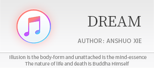
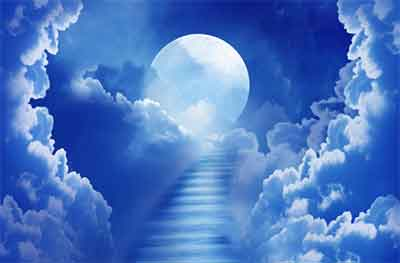

1. DREAM
By Anshuo Xie
May 20, 2016


The moon sheds her silver glory all over the earth, mountains and rivers. Remote and serene is the great dome of heaven. From the solitude of sky came a voice, clear and bright, as deep as the sound of the distant bell in the ravine, Echoing through the waving depth of the heart……
Discard complexity of concepts. Relax your senses and mind. You should know, Opinion and thought are but perceptions of the mind, Obscuring the reality of nature divine. Everything you see is the mind displaying the memory of itself. Past, present, and future, are an illusory continuity of “the seer” clinging to “the seen”. The thought-form of you is just like the dirt and dust that alights on the mirror of the mind. Wiping out the dust, the reality of life unfolds itself. From the memory of the mind, dreams arise, tangibly. Yet the mind itself is free of all dreams. Seeing yet nothing seen in itself. Seeing transcends the seen. Free from all that is seen, seeing pervades every sight,
With no distinction into any one sight. That is “I AM”.
So simple, “I AM”, That it can be not perceived by thoughts. So pure, the manifest of “I AM”, That it can be not touched by emotions. Within the illusory and defiled body-mind dwells the Supreme Reality, Shining forth through ignorance and habitual tendencies, Pure and effortless. Buddha-Nature is right here and now in your delusory mind, Radiating through lust and greed, Clear and transparent. No rational intellect was to reach me, Merely because consciousness is but the deluded state of primordial awareness. No endeavor was to attain me, Merely because divisive thoughts fabricate a misunderstanding of me. No experience was to describe me, Merely because every sensation places bondage that limits me. Everything is the grace of primordial awareness, Whereby the manifold dance of illusory forms appear in an endless succession. Yet pure awareness is detached from all deliberate action in the sphere of void.
Go forth and love your enemies. You should know, All enemies are created by the illusion of the mind filled with hatred. Misperception of your true self gives rise to love and hatred. As waves of the ocean blown and tossed by the wind, the mind of hatred casts the image of adversary. What you hate and hatred itself are inseparable. Loving your enemies is to forgive yourself. When the waves of hatred subside, the disturbed mind rests naturally at peace. The tranquil and peaceful state, Is “I AM”.
All lovers, relatives, and friends are but karmic debts of the mind, Like the tossing foam amid waves of the sea. It is the reflection of me in the taint of your love and desire that presents the kinship tangibly in your eyes. Purify your body-mind, let go the perpetual foaming of thoughts. When the foaming is dispersed, the ocean-swell is at one with its peaceful depths, As immense as the space illuminating the body and the mind. The spaciousness merges into the nothingness. That is “I AM”.
Open now the gate of your mind, widely, Let not the flow of rational thoughts shutter the light of awareness. Way of life is utterly simple and straight, As clear as the cloudless sky, As translucent as the blemish-free moon. It is your mental fabrication that inflicts life’s ups and downs, As if erecting a mountain barrier upon the open plain. A trace of doubt stripes a deep groove. A hair of craving upholds a great hill. An instant of hatred beckons frightening beasts (wolves, serpents, tigers, and leopards) A flicker of eros creates swamp and lake.
Forgetting your true self, You stagger around in a dream-land with a heart full of sufferings. Enticed by the lures of ignorance and cravings, you find yourself helpless and lonely. It is your craving and striving that perpetuate the dream-like Samsara, Forging all calamities and troubles. Leaving behind all bondage of selfish desires and dead habits, you come nearer to meet with me in yourself – the primal appearance of your true Self.
Let go of the ego, completely. Only then you embrace the life as a whole. The stream of life and death flows only in your mind. Liberate the fears that urge to protect yourself. Then the mind relaxed and gentle becomes the vast sea of great love. Great love transcends words. Great love implies truth. Great love raids demons. Great love dispels darkness. Great love is blessings, forgiveness, and self-discipline. Great love is the root of renunciation, the flow of divine light, the peaceful joy, the bliss of great fulfillment, and God ending all fears. When great love springs from within, reality unveils my face to you. Truly devote yourself without reservation and regret. The force of the ego that fuels all the suffering melts away. Sacred love enlightens the body and the mind, within and without. Accept what life brings, that is the face of “I AM”.
Absolute and natural, “I AM” the naked joy, the natural liberation, the transparent Now, and the tender peace. Beauty is insufficient to convey my gorgeousness.
Greatness is insufficient to assess my simplicity. “I AM” so self-evident, That the seeing, hearing, feeling, and knowing of sentient beings are all ultimate me. Yet, sentient beings are deluded by their own thinking, seeing, and knowing, and unaware of me. Merely because what they perceive defiles the utter simplicity of me. The primordial awareness pervades all as it ever is. Yet it can be not realized by sentient beings, Merely because the incessant stream of thoughts blinds the eye of their hearts.
“I AM”－ the primordial awareness of sentient beings, Ever aware in the cyclic dreams of birth and death. “I AM” － the essence of your happiness, anger, sorrow, and joy, Pure and alert in the arising and resting of thoughts. “I AM” － the nature of your seeing, hearing, feeling, and knowing, Witnessing dependent origination and destruction through your sensory experience and intellectual discrimination. Yet unfixed and unperturbed in all births and deaths.
All fantasies emerge from distinctions of your mind. Yet, “I AM” not affected or changed by whatever you perceive.
The universe mirrors “I AM”. Striving to recognize "I AM" in delusion gives rise to the primal light of all life-forms. “I AM” the source of hatred and happiness, love and desire in the deep of your being. When you are indulged in the colorful experience of life, Experience disturbs the peaceful state of your self-nature. Experience then takes the beingness out of you, Obscuring the primordial pure awareness. Delusions discriminate the existence of light. Enlightenment embodies the light of Wisdom. When the discriminative mind comes into being and creates distinctions, the world appears. You are the ignorant form of me. “I AM” the original nature of you, Laying asleep in the deep of your heart. The world is the reflection of self-awareness. And the awareness is of absolute perfection in its reflection. Affliction is but Bodhi. Bodhi is together with afflictions, never apart, in the vast expanse of timeless stillness. Sentient beings are essentially me, “I AM” no other than sentient beings. The body and the mind are pure illusion, Closely examine that you come nearer to me. All dharmas are void in self-nature,
Thoroughly contemplate that you are approaching me. What you see is all but your mind, Fully aware that you get free from all attachment and defilement, Which is the form of “I AM”. When the train of emotions and compulsive thinking come to an end, The discursive mind melts into the nature of pure awareness. When all illusions utterly vanish, “I AM” awakening in you. Eternal is Now.
“I AM” along with the formation, abiding, destruction, and ultimate void of the entire universe in beginningless kalpas. The void nature of all dependent origination is “I AM”. “I AM” abides in the minds of innumerable sentient beings in the vast expanse of space. Illuminating every delusional moment with marvelous brightness. Reflection of me in illusory karma-bound minds brings out the rise and fall of life. Enslaved by delusions and afflictions, Sentient beings are seeking the path of me, This gives birth to the eighty-four thousand dharani-teaching.
Consciousness arises from the restless heart. Emotion arises from the anxious mind frantically seeking relief.
Perception arises from the confusion and uncertainty of the self. Ego arises from the fear and obsession of the delusory mind. All experience is utter misery in essence. Sentient beings are but the fruits of karmic deeds. Forgetting the true self, you are goaded by habitual patterns and sufferings. Because of ignorance of your original nature, You cling to the outward out of fear. Looking for proof leads you astray, You grasp at illusions, Like drowning non-swimmers in the sea, Struggling frantically to grasp the life-saving straw. It is the eager self-identification with whatever you perceive that makes you forget your true being, losing your way into the dream-land of ignorance. You are the ignorant form of me, “I AM” the enlightened one in you. You are the pursuant state of “I AM” in dreams. When the chase ends, That ever-present, free from all delusions, is “I AM”. The primordial awareness has never been apart from all beings. When all beings renounce their ego-self, That non-attainable is but awareness itself.
The faculty of seeing with eyes that see the world is the changeless among the changeful sights. The faculty of discerning with mind that distinguishes good from evil is the changeless among the changeful deeds. The faculty of conceiving with memory that records concepts true and false, and right and wrong is the changeless among the changeful concepts. The faculty of sensing with heart that feels pain or pleasure is the changeless among the changeful experiences. The vision of God and the vision of demon, when arising, arise from the mind itself. Yet, the essence of the mind is the changeless, becoming not holy in sight of God, nor disgraced in sight of demon. Whatever you perceive is nothing but the turbulence of your mind. It is through your mind that the world appears in “I AM”. When the world merges with the mind indistinguishable, That marvelous awareness at peace is “I AM”. Neither entertaining the pure. Nor rejecting the impure, “I AM” omnipresent in all directions of Ten Realms of Dharma, Yet remains natural and unconditioned in every name and shape.
All kinds of activity, birth-and-death, cause-and-effect, are the delusory state of “I AM”. All forms of life and the world as such are the beingness of “I AM”.
All Dharma and truth are the paths in search of “I AM”. All creatures and the nature are the drifting of “I AM” in cyclic existence. All realms of Buddhas dwelling in fine mote of dust are the compassionate response of “I AM”. All ego-selves of sentient beings are dreadful suffering of “I AM”. The witness that witnesses the arising and the ceasing is the consciousness. When the consciousness is released from the witnessing mind, Enlightenment comes in. Perceiving and the perceived are never apart but ultimate One. Realization and ignorance are never apart but ultimate One. Sentient beings and Buddhas are never apart but ultimate One. Transience and eternity are never apart but ultimate One. Reality and illusion are never apart but ultimate One. Affliction and Bodhi are never apart but ultimate One. Heaven and hell are never apart but ultimate One. Samsara and nirvana are never apart but ultimate One. Enlightenment and enlightened from the outset are void in nature. Realizing that all forms are essentially formless, You meet with me. The real nature of your afflictions is but the marvelous awareness of “I AM”.
When Buddhists read Sutra,
Chanting Buddhas’ names, You should know, What they chant is me. When the Church of God pray to God, Truly repent. You should know, The prayer of the Holy Spirit is me. When heretics worship the Fire or the Moon, Praying for the spiritual power of Gods, Extolling the greatness of the Creator, You should know, The light of miracles is me. Lao-tze calls me “the Tao”. Buddha names me “the Nature”. Heretics honor me “the Supreme Brahman”, Sentient beings hunt for me as “the Truth”. From different knowledge of "I AM" are born sentient beings of different realms. Yet sentient beings and "I AM" are uniform and in essence One. The sense of “I AM” gives birth to you, When the object-craving mind vanishes, and there then is no you but “I AM”. Neither taking nor rejecting, neither tainted nor pure, neither living nor died. “I AM” ever-present in perceptions of sentient beings, never apart.
All is the manifestation of primordial awareness. Everything happens as it happens by interacting causes and conditions, spontaneously, Yet “I AM” transcends all the arising and the ceasing . “I AM” follows cycles of growth and decay of all creatures. All phenomena are impermanent like a mirage, Realizing this, you then come to see me. “I AM” follows cycles of birth and death of sentient beings, Moving with the rhythms of the moon, sun, stars and constellations. Changing with the Nature, Heaven and Earth. All dharmas have no underlying self, Realizing this, you then come before my presence. “I AM” in your mind, in your body, and in your consciousness. The pure awareness, which can be not held by consciousness, is me. “I AM” pervades most subtle inquiry of the mind, Unshaken timelessly at instant flash of a thought. Experiences melt into inner peace of serenity. And serenity erases all experience up into itself. When all perceptual experiences are detached from the mind, The essence of mind is unborn but the luminous awareness, Reflecting “I AM” in unsurpassed perfection. When sentient beings examine the void nature of all dharmas, Extinguish illusory and divisive thoughts, The void nature of non-attached awareness is “I AM”.
Truly to know me, Dive down into the depth of your afflictions in search of me. Afflictions and Truth are both a figure of me. The mind seeking the truth in the mind-self, Sees directly into affliction and finds its essence. Then the mind realizes the true self. In the fulfillment of raging desires, you forget your original nature divine. Rest at ease, Peacefully accept all pain and suffering for whatever it is, Neither shunning, nor resisting. The restless dissolves in the stillness of the mind. And then you are to be aware, That all knowing is in essence misperception. Widely opened mind, Allows everything to happen as it happens, completely, Neither resisting the experience of your sensation, Nor discriminating the observation of your delusions. Welcome all consciously, The restless mind of distinction and separation then loses its limits in its self-settledness. That inconceivable is － “I AM”.
Way of the world is but a dialogue between the mind and its shadow. The mind is where “I AM”. The shadow is who you are. The life breath of “I AM” grants your beingness. The nature of your beingness is all but “I AM”. Great bliss springs forth in the profound release of the mind at ease. In the relaxed state, the restless of self-identification comes to an end. When the vast and boundless bliss flood the finer movement of the mind. The radiance of pure awareness illuminates forth spontaneously, clear and complete. The serenity of the mind becomes one with its infinite expanse. Undisturbed is the mind unbound. The state of awareness is always pure and untainted. Illuminating the body-mind through detachment. As the obsessive, worrying thoughts cease, The real is not anything perceivable. The Supreme Reality can be not pointed out in words, When the self-identification with the body-mind disappears, The real is not anything expressible. Flow with life, without the least effort. Self-arising and self-liberated mind is free of dwelling. Transcends all attachments, which is the infinite totality of “I AM”. You arising, “I AM” arises. Taking the imaginary minds as the real, you are in samsara.
Purify the mind and realize its true nature. Leave behind all illusions, you are the infinite awareness. Inexpressible, non-attainable. To be as it is, That is the blissful freedom of “I AM”. The mind merges in the self. Affliction melts in the heart of stillness. Distinction between the truth and the fantasy vanishes When the ego dies out, so does the imaginary world. Seeing and the seen become void. Awakening and the awakened fade out of distinctions. When all separations come to an end, what remains is “I AM”.
Free from form and shape, “ I AM” takes form in every form of beings. Beyond all life beings, “ I AM” presents life in endless succession of the nature and the universe. Devoid of any dwelling place, “I AM” pervades every mote of dust, where infinite realms of Buddha reside. Free from all distinctions, “ I AM” present the unity of the supreme nature beyond duality of good and evil, impure and pure, superior and inferior, noble and
ignoble, beauty and ugliness, as well as life and death. In the womb of “ I AM” sentient beings wander in the cycle of samsara . Due to ignorance of their true nature, Sentient beings are drowning in an ocean of suffering created by their bewildered minds.
Formless is the primordial awareness. Form of sentient beings is form of the formless, the Buddha Himself. Mindless is the primordial awareness. Mind of sentient beings is mind of the mindless, the ultimate stillness. Dwelling-less is the primordial awareness. Movement of cause and condition is movement of the immovable, the unshaken completeness. Self-less is the primordial awareness. The ignorant self of sentient beings is self of the selfless, the silent expanse of awareness in perfection. False perception of one’s true nature creates afflictions, Which is how sentient beings come into being. When sentient beings awaken to the nature of afflictions, Affliction is no other than Bodhi. Let your mind clear and your true nature emerge. Then this body-mind turns into pure illusion. Illusions were from the utmost never born,
The unborn is absolutely spacious, And this spaciousness is non-attainable at all.
You and me are but one – the primordial awareness. Like bubbles out of the sea, When bubbles burst, Stillness is the sea, as it ever is!
There is neither you nor me in reality. You are nothing but the delusion of me. “I AM” everything in the primordial awareness of you. Buddhas’ lands appear nowhere but in your own mind. When the sense of “I” vanishes, ”I AM” merges into the depth of your being. Go beyond the beingness, you become the original One with me. The Great Oneness is free of birth and destruction in the conjunctions of cause and condition, No wisdom and no attainment whatsoever. Because nothing were to be attained, You and me exist only in the mind dreaming a dream. Yet, the essence of the dream is Nirvana itself.
Delusion is who you are.
Awakening is what “I AM”. When illusory imagination vanishes, The naked awareness is ultimate void. The great void transcends all forms and no-forms. That is illumination in perfection.
The sense of “I” and the world as such arise from the egoic delusion. Chains of ego fetter the soul. The “I-thought” of you obstructs the simplicity of me. Mistaken perception of me breeds the fear into your being. You are an idle dreamer lost in life and death in my dream. When you permanently abandon all egoic attainment, You are to awaken the true nature of your mind from sensory and intellectual experience, And return to the pure awareness free from the mental movement of your mind. Perceiving without a center of perception. Awakening without a state of awakenedness. When all dualities of rising and ceasing come to an end fully, you are none but “I AM”. Yet, “I AM” never comes nor goes. The voidness (sunyata) can be not acquired. Non-attachment of the witness is void by itself. Intrinsic awareness can be not grasped from the outside, Extinction of all delusions reveals the naked awareness.
The reality of mind is non-attainable. The reality of mind is unapproachable. Free from inverted perception and deluded thoughts, Ever there is your original being, -My initial reflection.
The path of return resides in the heart. Look into your own mind and investigate carefully, Cut off all attachments and pride. Purify your mind-and-body of all desires and craving, Then only the awakening of me in yourself is your true achievement. That unblemished and unbound, That from the utmost pure and natural, Is your return to me and “I AM” embracing you. The awakening mind embraces the primordial awakenedness. “I AM” always with you, never apart.
As the return of raindrops to the sea itself, And the sea vanishes in the void, The void merges into the nothingness, Nothingness erases itself. When the instant of thought you see into your own nature, Both you and “I AM” dissolve into the ever-expanding Now.
The world is no better than a dream without concrete reality. Once awakening, Who would there be to dream the dream. Inexpressible is where the world emerges. The entire world is the reflection of the inexpressible. It is through the reflection that all sentient beings take the shape, so the world. Yet, the essence of your body-mind is but the real, Unbound by entanglement in discursive thoughts and elaboration.
When within and without the body-mind and the world melt down into your heart. The heart is all but an instant of thought， From where illusionary phenomena take place. When the manifold phenomena (Dharma) of the external world withdraw, The whole universe and sentient beings are all you.
Yet, you leave no trace in all beings. You are nothing but me, total awareness of oneself. Nirvana in silence! The duality of you and me arises just from an instant of delusion.
The world is not the world as it is. It (the world) is the creative play of the delusory mind outward turned into self-identification. Sentient beings are not sentient beings as they are. They are the minds losing themselves in the dreams, like phantoms of sky-flowers, The mind clinging to the dream-show appearance is the delusion of “I AM”. Delusion is the mind of sentient beings. Ignorance is the cyclic existence of the world. “I AM” moves along with the ever-recurring wheel of causes and conditions, And transcends all mental images and worldly affairs. No coming nor going, Now arrives at the timeless.
Past and future, Sentient beings versus Buddhas, Are all in the eternal present. Yet, the present is but one instant of distinction. The world sprouts into being out of one instant (of distinction). When the instant is clear, so is the world as a whole. When the instant is extinguished, the beginningless dream of endless
kalpas awakens itself. Samsara and nirvana are ultimately of great perfection. Afflictions and enlightenment are equal and non-dual in essence. The Realm of Buddha is nowhere but the worlds of all beings, The mind of sentient beings is one with the mind of Buddhas. The past and the future are absolute Now. Yet, the inexpressible Now, silent in nature, is in itself Buddhahood.
[End]
2. Gatha
The illusory body is but Bodhi itself
The clear mirror of the mind is void and unborn
Ever Pure and untainted, what to clean
Buddha nature dwells in a mote of dust
Birth after birth yet none born in reality
Destruction after destruction yet nothing destructed in nature
Illusion is the body-form and unattached is the mind-essence
The nature of life and death is Buddha Himself